(01)
Battery Door
Designing a one-touch battery door release mechanism with the button seamlessly integrated into the door geometry.
Overview
As part of an Apple interview, I was asked to design a battery door mechanism that pops open when the user presses a button within the perimeter of the door. The mechanism needed to be compact, reliable, manufacturable, and intuitive to use.
I developed the design from initial concepts through detailed CAD, using decision matrices, mechanical calculations, tolerance analysis, and FEA to evaluate and validate the final mechanism. I also considered how each component would be manufactured, what materials would best meet its functional requirements, and how the mechanism would be assembled.
Concept Development
I began by defining the assumptions I was designing around and the key requirements the mechanism had to meet.
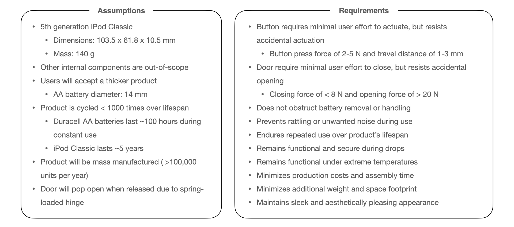
I then researched existing mechanisms that could translate a downward button press into the motion needed to release the door. I identified four potential approaches:
- Moving snap fits
- Push release latches
- Rotating cam bodies
- Sliding latches
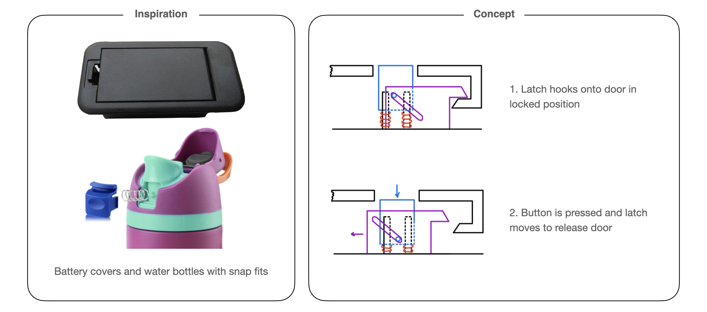
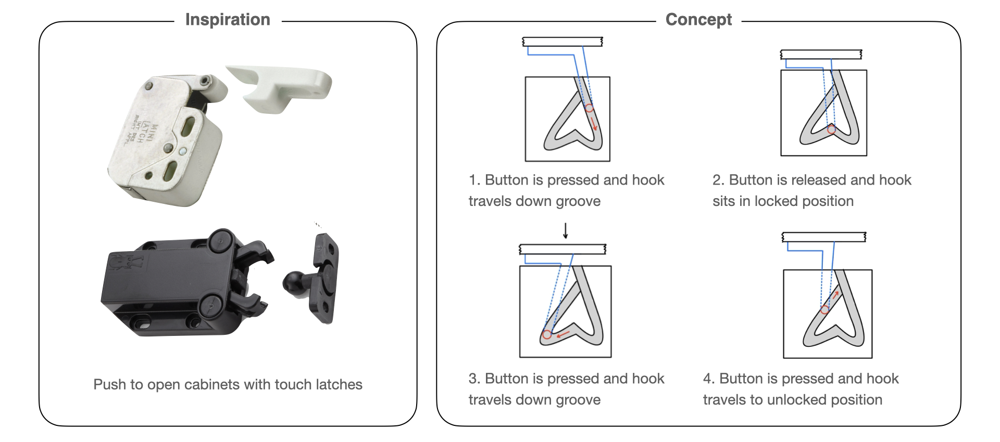
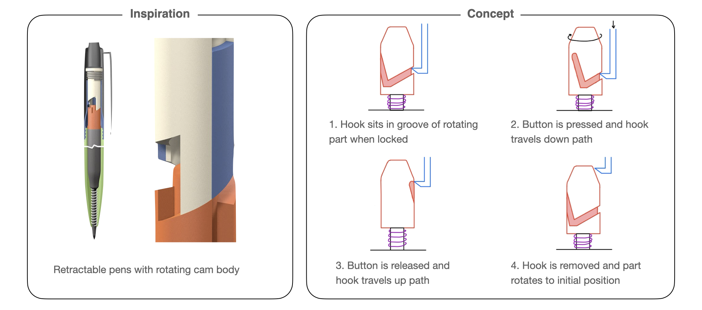
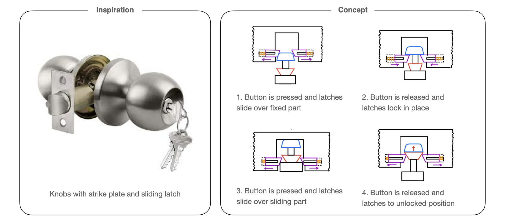
For each concept, I sketched how the mechanism could be integrated into the battery door and walked through its full motion from button press to release and reset. This helped me identify potential failure modes and compare trade-offs in reliability, tolerance sensitivity, accidental actuation, complexity, and user experience.
I ultimately chose the moving snap fit as the strongest starting point. Its primary drawback was user experience: because the button remained attached to the housing, the user would need to press it through an opening in the door. However, the design was less sensitive to tolerances, less prone to accidental actuation, and mechanically simpler. I decided these advantages outweighed the less seamless interaction.
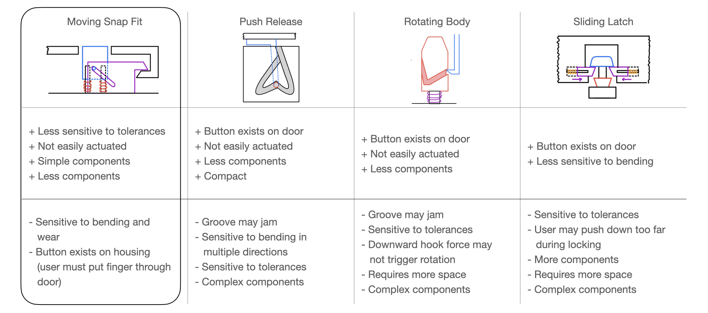
I then developed two implementations of the moving snap fit based on different methods of converting the button press into latch motion. In the sliding design, pegs on the button travel through angled slots in the latch, converting vertical button travel into horizontal motion that pulls the latch away from the door. In the rotating design, the button pushes against the end of the latch, rotating it out of engagement.
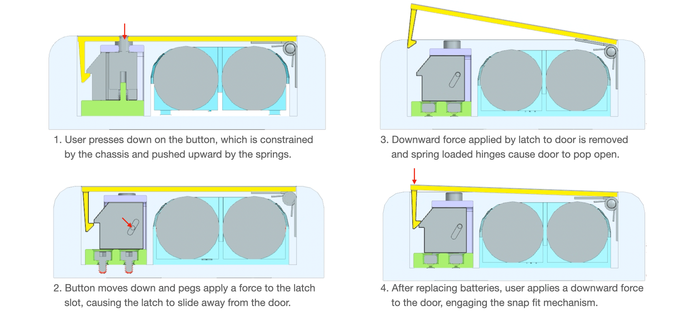
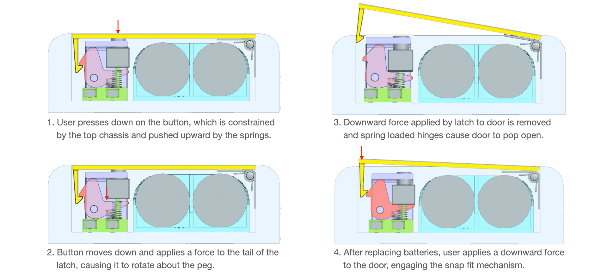
I modeled both designs in Siemens NX and compared them using a weighted decision matrix. The two concepts scored closely: the rotating mechanism was more compact and lower-cost, while the sliding mechanism performed better in effectiveness and user experience. Because these were the highest-priority criteria, I selected the sliding snap fit for further development.
| Criterion | Weight | Sliding rating | Sliding score | Rotating rating | Rotating score |
|---|---|---|---|---|---|
| Effectiveness | 5 | 4 | 20 | 3 | 15 |
| User experience | 4 | 4 | 16 | 3 | 12 |
| Manufacturability | 4 | 3 | 12 | 3 | 12 |
| Ease of assembly | 4 | 3 | 12 | 3 | 12 |
| Compactness | 4 | 3 | 12 | 4 | 16 |
| Cost | 3 | 3 | 9 | 4 | 12 |
| Total | 81 | 79 |
Mechanical Design
The release mechanism is contained between a top and bottom chassis, with the bottom chassis fixed to the main housing. The latch sits above the bottom chassis and slides horizontally, while the button sits above the latch and moves vertically. Pegs extending from the button fit into angled slots in the latch, coupling the motion of the two components. Springs sit between the bottom chassis and latch, pushing the latch upward along the angled interface and toward the door. The top chassis snaps onto the bottom chassis using snap fit features to contain the mechanism and constrain each component to its intended motion.
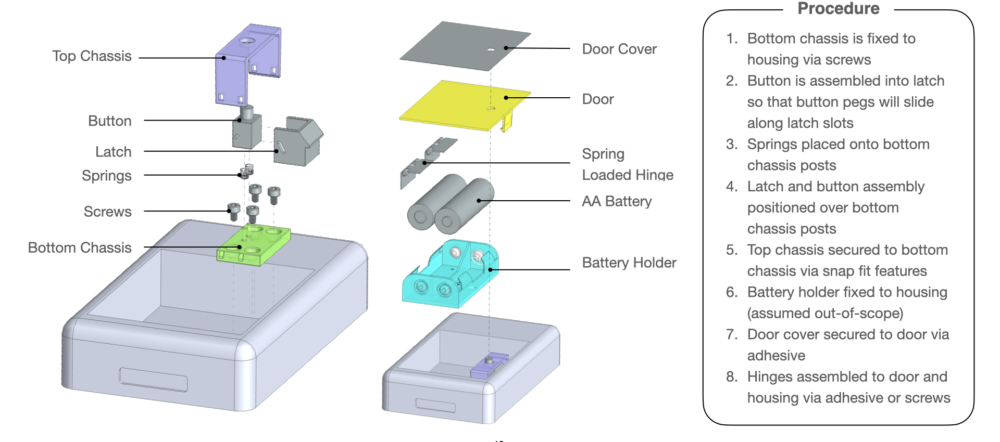
In the default latched state, the springs hold the latch forward so that it engages with the snap-fit feature on the door. The button pegs rest at the top of the latch slots, leaving the button in its raised position and the door securely engaged.
When the user presses the button, the pegs travel downward through the angled slots. The slot geometry converts this vertical button motion into horizontal latch motion, pulling the latch backward until it clears the door. Once disengaged, spring-loaded hinges lift the door open.
Once the user releases the button, the springs return the latch and button to their default positions. When the user pushes down on the door, the ramp on the door's snap-fit feature pushes the latch backward as the door moves downward. Once the feature passes the latch, the springs push the button up and the latch forward again to re-engage it. A flat face above the ramp prevents the door from driving the latch backward when pulled upward, keeping the door securely closed.
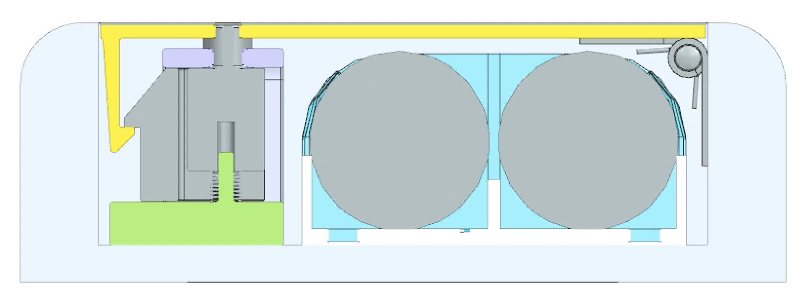
Engineering Analysis
I sized the mechanism by working backward from the latch travel required to release the door. From this constraint, I determined the required button travel, slot geometry, and spring stiffness.
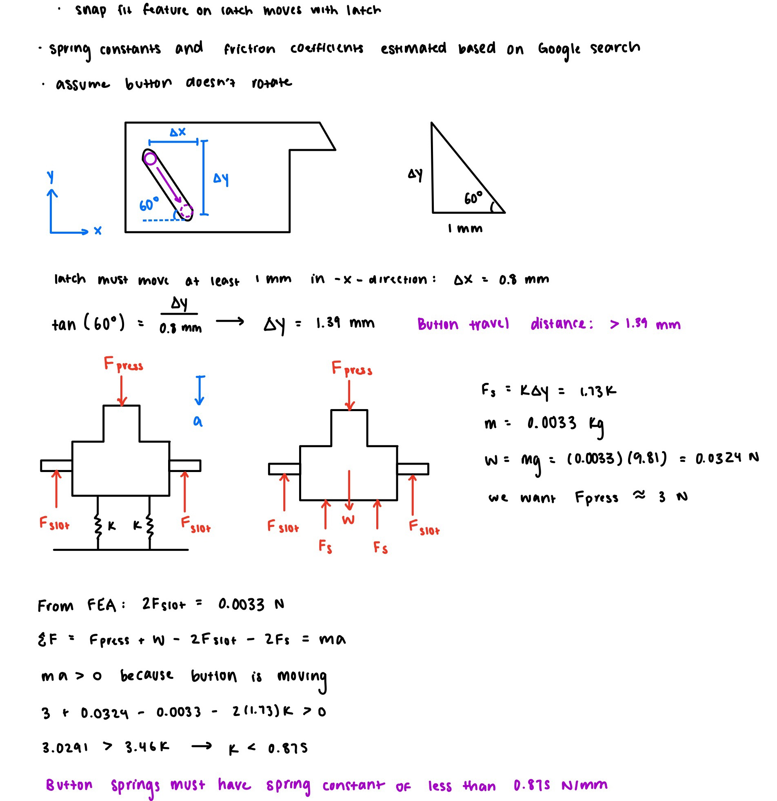
I then evaluated the components most susceptible to repeated loading over the required 1,000-cycle lifespan. Hand calculations showed that the button peg and door snap-fit stresses remain below the fatigue strengths of their respective materials, while snap-fit strain remains within the allowable range.
I also calculated the force required to deflect the snap fit while closing the door to ensure that the mechanism remained within the maximum allowable closing force.
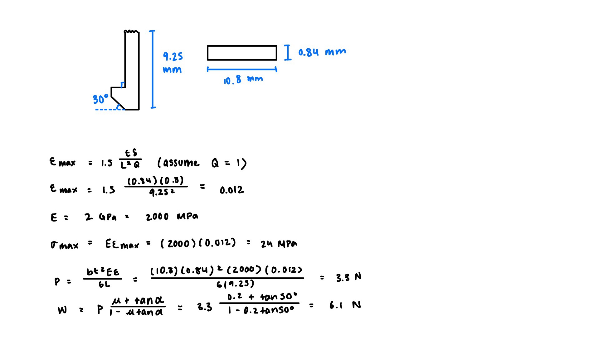
Because reliable operation depends on sufficient overlap between the latch and door, I performed a tolerance stack-up across the mechanism. The analysis confirmed that the latch maintains sufficient engagement under worst-case dimensional variation.
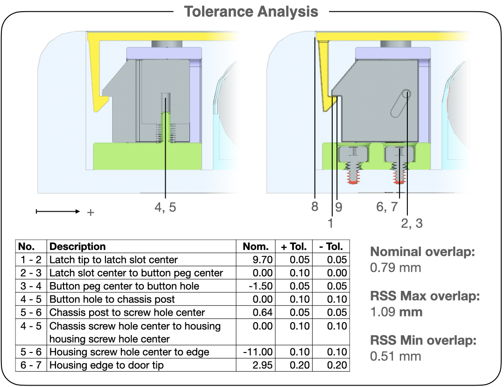
Finally, I used FEA to validate the hand calculations for the mechanism's two primary contact events: the button pegs driving the sliding latch and the door snap fit deflecting past the latch during closing. I evaluated deformation, stress, and strain to verify that the components remained within acceptable limits.
Manufacturing & Cost
I selected materials and manufacturing processes for components based on mechanical performance, geometry, production volume, and user experience. The chassis, latch, and door are made of ABS, which provides the flexibility needed for the snap-fit features to deflect without permanent deformation, while also being well-suited for low-cost, high-volume injection molding.
The button and exterior door cover are made of aluminum, providing lightweight, durable surfaces with a higher-quality tactile finish required for a handheld electronic device. The remaining components, including the springs, screws, and spring-loaded hinges, are purchased rather than custom manufactured. Based on the proposed materials and manufacturing processes, I estimated the total cost at approximately $3.30 per unit.
| Component | Qty | Material | Manufacturing | Mass (g) | Unit ($) | Total ($) |
|---|---|---|---|---|---|---|
| Top chassis | 1 | ABS | Injection molding | 6.9 | 0.35 | 0.35 |
| Button | 1 | Aluminum 6061-T6 | Die casting | 3.6 | 0.10 | 0.10 |
| Latch | 1 | ABS | Injection molding | 4.6 | 0.25 | 0.25 |
| Springs | 2 | Purchased | Purchased | — | 0.10 | 0.20 |
| Screws | 4 | Purchased | Purchased | — | 0.10 | 0.40 |
| Bottom chassis | 1 | ABS | Injection molding | 8.6 | 0.45 | 0.45 |
| Spring-loaded hinge | 2 | Purchased | Purchased | — | 0.10 | 0.20 |
| Door | 1 | ABS | Injection molding | 24.4 | 1.20 | 1.20 |
| Door cover | 1 | Aluminum 6061-T6 | Stamping | 4.7 | 0.15 | 0.15 |
| Total | 3.30 |
Results
The final design met the requirements of the challenge with a nine-component mechanism estimated at $3.30 per unit. The sliding snap fit provides one-touch release and automatic re-latching, while accounting for reliability, manufacturability, assembly, and user experience.
This project gave me the opportunity to take an open-ended mechanical design from early concept exploration through a fully developed solution, while balancing design trade-offs. Throughout the process, I demonstrated my skills in CAD, FEA, and tolerance analysis, as well as my understanding of Design for Manufacturing and Assembly (DFMA) principles.